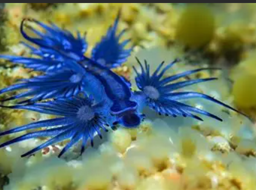
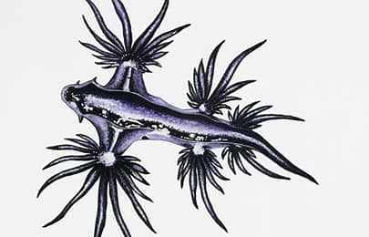

Datos importantes
🧜♂️ ¡Claro! Aquí tienes una lista de datos fascinantes sobre el dragón marino azul (Glaucus atlanticus)
que
lo hacen tan especial:
- Flota boca abajo gracias a una burbuja de gas en su estómago, lo que le permite navegar por la
superficie del
océano como si fuera una embarcación viva.
- Es hermafrodita, lo que significa que cada individuo tiene órganos reproductores masculinos y
femeninos,
aumentando sus posibilidades de reproducción.
- Come medusas venenosas, como la carabela portuguesa, y almacena sus toxinas para defenderse, creando
un
veneno
incluso más potente que el original.
- No tiene concha, a diferencia de muchos moluscos, pero su coloración azul metálica le sirve como
advertencia
de toxicidad.
- Puede ser caníbal en situaciones de escasez de alimento, atacando a otros miembros de su especie.
- Utiliza objetos flotantes como nidos, incluyendo madera o restos animales, para depositar sus
huevos.
- Su picadura puede ser dolorosa para los humanos, causando síntomas como náuseas, vómitos y
reacciones
alérgicas.
- Tiene un camuflaje doble: su parte dorsal plateada lo oculta desde abajo, y su vientre azul lo
disimula
desde
arriba.
- Se encuentra en mares templados y tropicales alrededor del mundo, incluyendo Sudáfrica, Australia,
el
Mediterráneo y Mozambique.
- Es diminuto pero letal, midiendo apenas entre 3 y 5 centímetros, aunque su impacto en el ecosistema
es
notable.
Habitad
🌍 El dragón marino azul (Glaucus atlanticus) habita en mares templados y tropicales alrededor del mundo.
Es
una especie pelágica, lo que significa que vive mar adentro, lejos de la costa, flotando en la
superficie
del océano gracias a una burbuja de gas en su estómago.
Aquí tienes algunos de los lugares donde suele encontrarse:
- 🌊 Costa este y sur de Sudáfrica
- 🐚 Mozambique
- 🐠 Costa este de Australia
- 🌅 Mares europeos, incluyendo el Mediterráneo
- 🌎 Océanos Atlántico, Pacífico e Índico
Aunque normalmente vive lejos de tierra firme, puede ser arrastrado por las corrientes marinas hacia las
playas, donde a veces se le encuentra varado. Su estilo de vida flotante lo hace depender del viento y
las
corrientes para desplazarse.
Colores
El dragón marino azul (Glaucus atlanticus) presenta una gama de colores tan llamativa como funcional.
Aquí
tienes un listado de los tonos más comunes que puede exhibir:
- Azul metálico en el dorso, que le sirve como camuflaje desde la superficie del mar.
- Azul pálido o plateado en el vientre, para mimetizarse con la luz del cielo cuando flota boca abajo.
- Azul oscuro o negro en rayas que recorren sus ceratas y el pie.
- Gris plateado en los rinóforos (órganos sensoriales en la cabeza).
- Blanco nacarado en algunas zonas ventrales, dependiendo de la luz y el ángulo de observación.
- Azul eléctrico en ejemplares más vibrantes o bajo ciertas condiciones de iluminación.

